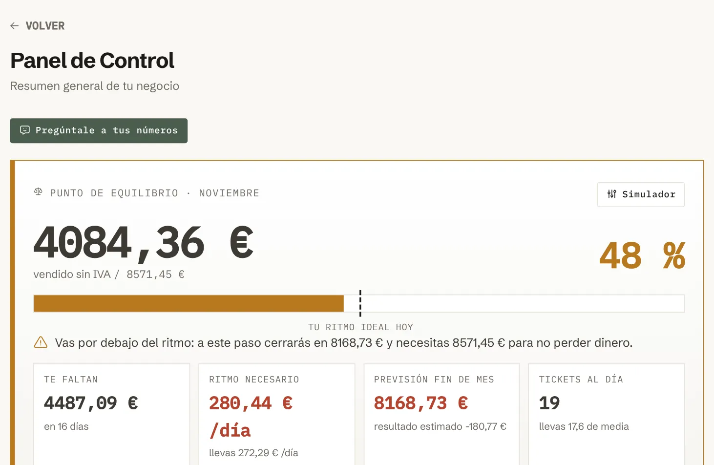

Hostelería · Asesoría · App · Eventos
Que tu local funcione como debería..
Asesoramos, gestionamos y creamos experiencias gastronómicas. Tres formas de trabajar contigo y una sola idea: que el negocio se note en la caja y en la mesa.


Experiencia
8 años
en cocina, sala y gestión de restaurantes
La app
Sin internet
funciona aunque se caiga la conexión
Idiomas
ES · CA · EN
la app y la web, en tres idiomas
Por dónde empezamos
Elige cómo quieres que te ayude.
010203
Asesoría
Un diagnóstico sin adornos y un plan de cuatro semanas para bares, restaurantes y cafeterías que necesitan un cambio real.
La app
TPV, cocina, reservas, personal y números en un solo sitio. Una licencia al año, configurada contigo.
Le Petit Comité
Eventos privados, catas guiadas y chef a domicilio. Nos encargamos de todo; tú solo te sientas a la mesa.
¿Hablamos de tu local?
La primera conversación no te cuesta nada. Me cuentas tu situación y te digo por dónde empezaría.